Coaches
See who's executing. Intervene early. Develop better players without chasing anyone.
OnStandard for coaches →Prove the work.
A coach, trainer, or dietitian sets your daily standard. You photograph each meal and answer a 20‑second check‑in. The app scores the day against that standard the moment the work lands — and the person who set it watches it happen.
The first 50 coaches & facilities lock today's price for life — free through the beta, and a later price rise never touches them.
Athletes and clients pay nothing on a paying professional's roster.
What is OnStandard
OnStandard is an execution and accountability platform for athletes, everyday clients, and the coaches, trainers, and dietitians who guide them. Your professional sets the standard. You prove you hit it — meals photographed, recovery checked, the day closed honestly. One score shows what actually got done, live, to the people who set the bar.
Why the standard has changed
NIL, revenue sharing, and the portal raised the financial stakes of athlete development at every level. The expectations are higher. The margin for error is smaller. The need for proof has never been greater.
Schools, programs, and families now commit serious money, time, and resources. Execution determines who gets trusted with the opportunity.
At every level, talent is common. Consistency, discipline, and availability separate good players from the ones who get paid.
Large rosters. Multiple staff. Dozens of daily habits per athlete. Critical information gets missed without a better system.
This is the whole product. Eight steps, every one of them a real screen from the app, showing what you do and what the app does back. If you can describe this to a teammate, you understand OnStandard.
You open the app.
It shows one thing to do next — never a to‑do list to triage. Items that haven't opened yet stay out of the way, so the card on top is always something you can actually do right now.
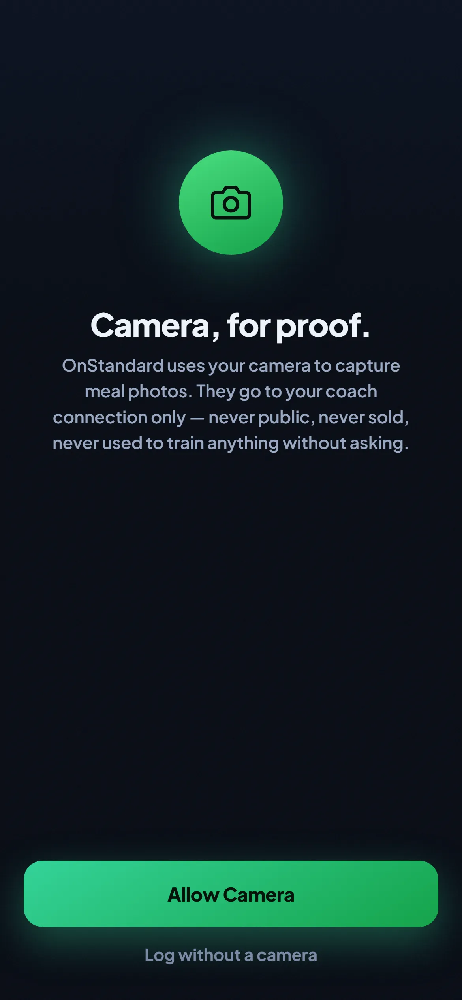
You point the camera at your plate.
That's the log. No typing, no searching a food database, no remembering at 11pm what lunch was. The photo is attached to the day permanently.
An AI reads the photo.
It stamps the meal on time, scores the plate's quality, and estimates the macros — naming each food with high, medium or low confidence. When something it can't see would change the numbers — a sauce, food off the edge of the plate — it asks one to three questions instead of guessing.
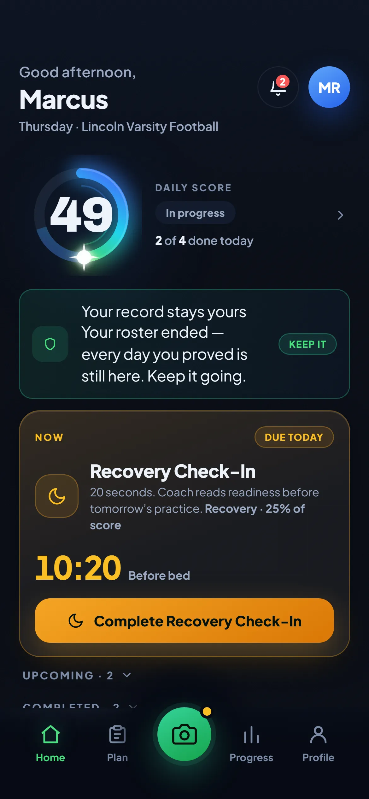
You confirm it, or correct it.
You can edit any food before logging — it's your plate. Then the score moves immediately. Not overnight, not on Sunday. The number on your home screen is today, so far.
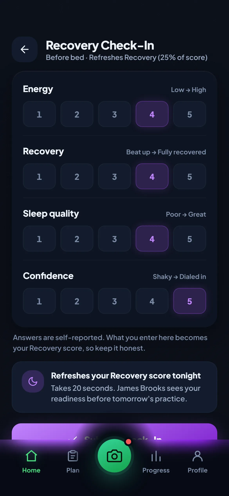
Before bed, you answer four questions.
Energy, recovery, sleep, confidence. About twenty seconds. Recovery is a quarter of an athlete's score — and it only counts if you actually do it. Skip it and it contributes zero, rather than quietly averaging in.
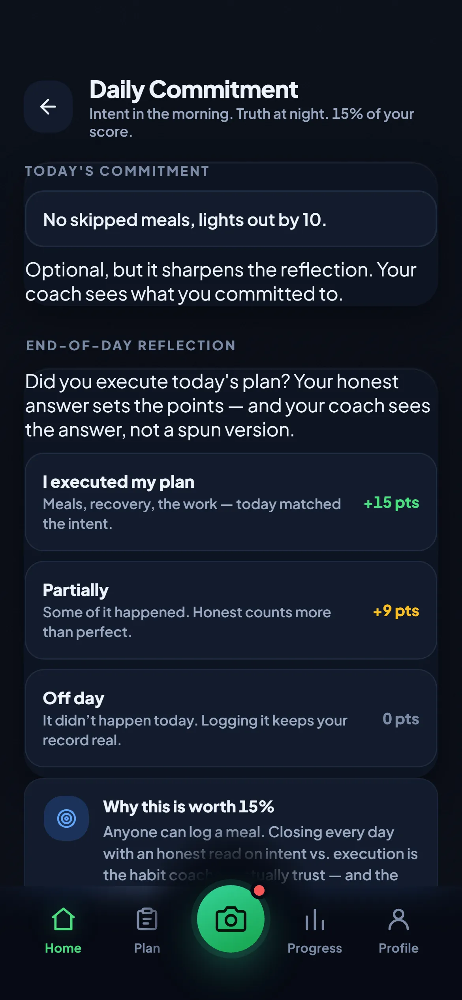
You close the day honestly.
Did you execute? Yes, partially, or an off day — each worth exactly what the screen says. An honest "off day" scores zero and keeps the record true. That's the point: the app would rather have a real zero than a flattering guess.
The day locks at midnight.
Land 80 or better and your streak grows. One missed day per rolling week is forgiven; a second ends the run. A day you never opened the app counts as a miss — going quiet isn't a loophole.
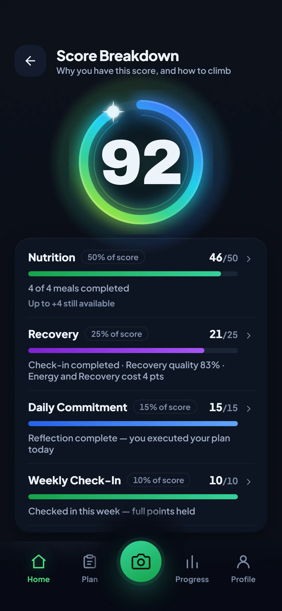
You see exactly why.
Every score opens into its parts — what each one contributed and what was left on the table. Nothing about the number is hidden, from you or from the person coaching you.
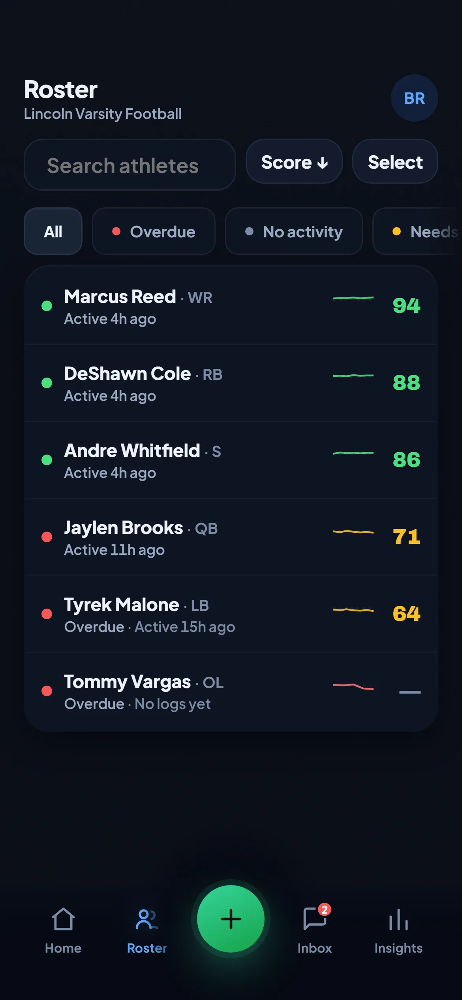
And on the other side
Every athlete, sorted by score, flagged by what actually happened: on standard, below standard, overdue, or no activity. The athlete who hasn't logged shows a dash — never an invented number. One tap sends a nudge, once per athlete per day.
That's the whole loop. You log; the day scores itself; the person who set the standard sees it. Everything else on this page is detail.
See who's executing. Intervene early. Develop better players without chasing anyone.
OnStandard for coaches →Your session is one hour. Results depend on the other 167. Finally see what happens between sessions.
For trainers → For dietitians →Align your staff. Protect your investment. Raise the standard across every roster.
Own your process. Build the habits. Walk into every room with receipts.
OnStandard for athletes →Know the work is getting done. Support with confidence, not surveillance.
OnStandard for parents →Four components, every day, for everyone. Your professional can set your targets — they can never touch the weights, and no weight can exceed its published ceiling. That line is the whole integrity story: a coach can make your plan harder or easier to hit, but they cannot make the score easier to earn. Neither can you.
The mix above is a competing athlete's. A fat‑loss or muscle‑gain client shifts a few points between nutrition and recovery — because those goals genuinely turn on different things. The ceilings never move, so no combination can be gamed into an easy day.
The honesty clamp: the score is capped by the evidence behind it. No meal logged, no check‑in, no answer — no points available to earn. An empty day cannot produce a good number, on any plan, for anyone.
Plan styles
A 17‑year‑old lineman eating to a number and a 45‑year‑old rebuilding a relationship with food should not be measured the same way. So the same score runs on three levels of structure. Your professional assigns one — and the app tells you, in plain words, which one governs you and who chose it.
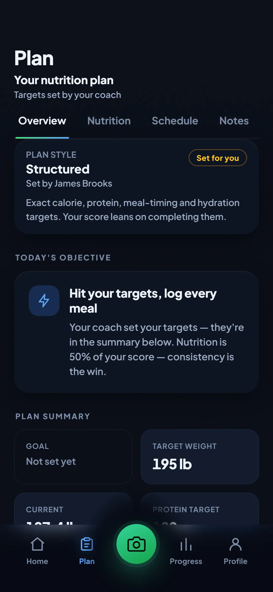
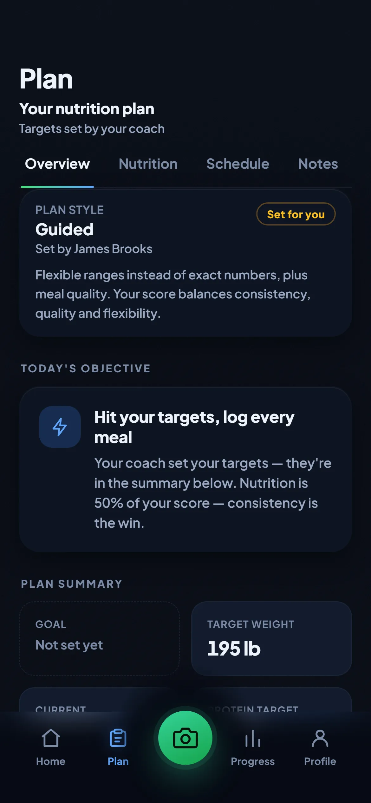
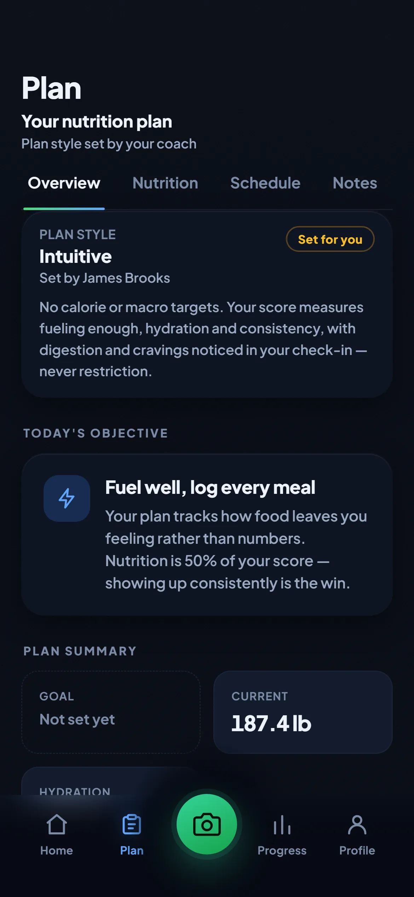
Verified Commitments
Meals are one kind of proof. Showing up is another. A coach can schedule a 5 AM roll call, a lift, study hall, or rehab — and get a verified answer without counting replies in a group chat.
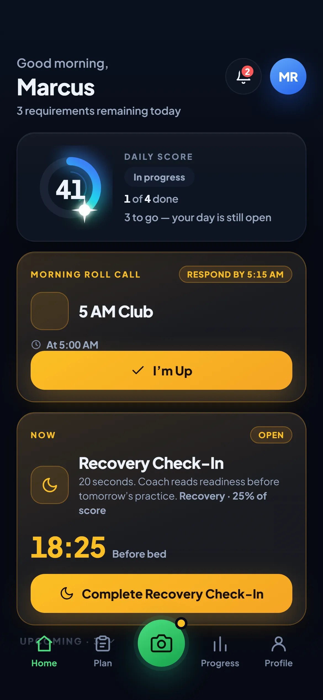
The card carries the coach's own title — "5 AM Club", not a piece of software vocabulary. Respond by the deadline and it's recorded. Automatic reminders go only to people who haven't answered, so nobody gets called out in front of the team.
These alerts deliberately break quiet hours, because a 4:45 AM roll call reminder that arrives silently is a feature that doesn't work. Your phone's own Do Not Disturb still wins.
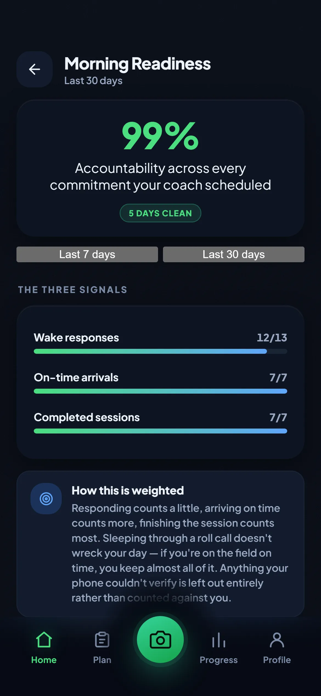
Accountability is weighted by what each signal is worth: answering counts a little, arriving on time counts more, finishing the session counts most. It does not touch your daily 0–100 score, and the app says so on the screen.
"Couldn't verify" is never "missed." A dead battery, a revoked permission, weak GPS indoors — those leave the calculation entirely rather than counting against you, and you get one tap to say what happened. Sleeping through roll call but arriving on time costs ten points out of a hundred, not your day.
OnStandard was built by a former Division I athlete and college football coach who saw both sides of the same gap: coaches plan brilliantly, athletes promise sincerely, and nobody can prove what actually happened between sessions. Every rule in this product, the fixed formula, the photo proof, the honest late credit, comes from rooms where the standard was real and the receipts weren't.
Founding 50: the first 50 coaches and facilities are free through the beta, then lock today's price permanently — every later price rise passes them by. No discount games, no expiry to diarise. You're not buying software early; you're setting the standard with us.
Brought on by a coach, trainer, or program. Everything in the eight steps above — the logging, the AI read, the score, the streak, the threads, your whole history.
For trainers, RDs & private coaches
Solo — $99/mo, up to 25 active clients. Professional — $179/mo, up to 50, then $10/mo per client beyond. Your clients pay nothing.
Teams, schools, and performance gyms. $249 up to 30 active participants, $499 up to 75, $799 up to 150. Departments and multi‑location are quoted.
Opening pricing. Founding partners: the first 50 coaches and facilities are free through the beta, then lock today's price permanently — including the $10/month per active client beyond a plan's limit. A later price rise never touches them. Athletes can optionally add a membership later for the written monthly report and weekly Deep Dive — it adds coaching, never their numbers, and it is never required to be on a roster.
Everything a coach, athlete, or parent asks before they trust the number. No hedging.
One photo per meal — the camera opens straight to the plate, and there's no typing or database searching. Occasionally the AI asks one to three quick questions about something it can't see. Then a check‑in before bed, which the app itself describes as twenty seconds, and one tap to close the day. There's no weekly form to fill out; the Sunday check‑in is the same short scale.
It reads as a missed day, honestly — and one is survivable. Your streak forgives one sub‑80 day per rolling seven; a second inside that window ends the run. The forgiven day doesn't itself count toward the streak, and the forgiveness recharges once it's more than a week behind you. A day you simply never opened the app counts as a miss too: going quiet is not a loophole. What the app won't do is pretend the day didn't happen.
Yes, on a paying professional's roster: the logging, the AI reads, the daily score, the streak, the breakdown, the coach threads and your full history. They carry the cost because they get the roster‑wide value. There is also an optional personal membership that adds written coaching — a monthly report and a weekly Deep Dive. It is never required, it adds narrative rather than numbers, and your stats are yours either way. If you leave a roster, your record doesn't vanish; it's yours.
The parts are, and so are their limits. Every day is scored on the same four components, and each one has a published ceiling it can never exceed. What shifts is the mix: an athlete chasing performance, a client losing fat, and a client gaining muscle lean on those four things differently, because those goals genuinely do. The rule that matters is the one that doesn't move — your professional sets your targets and can never touch the weights.
Two things, both structural. The weights are owned by the platform, capped, and enforced by tests that sweep every possible combination — a coach cannot move a single point of them. And the evidence clamp means the score is limited by what was actually logged, so a soft plan still can't manufacture a good day out of nothing. A coach can absolutely make your plan easier or harder to hit. They cannot make the score easier to earn.
For athletes they're connected to and have approved: the daily score, every logged meal with its photo and macro read, check‑ins, weight as a trend, requirement completion, and the meal threads. Before you join, the app shows you the real team behind the code and spells out what they'll see — and nothing is shared until you confirm. Parents get a deliberately narrower view: score, grade and date only. Teammates see nothing.
Professionals and programs cancel in account settings through Stripe's own portal — no phone call, no retention gauntlet — and can pause instead if that's the better fit. A personal membership cancels in the App Store or Google Play, since that's where the charge lives. In every case the auto‑renewal terms are shown before you're charged, not buried after.
No, and it will never claim to. It can flag possible allergens based on the foods it detects and the restrictions you've declared, which is useful as a heads‑up. But a photo can't reveal sauces, oils, cross‑contact, or hidden ingredients, so never rely on it to confirm a plate is safe. People with serious allergies should treat it as one more set of eyes, not a guarantee.
Your history stays yours, free, and readable: every logged day, score, and thread. Your seat on that roster closes, so live scoring pauses until you connect with your next coach, trainer, or program, and the moment you do, they see your history from day one. A solo plan for keeping your score live between professionals is on the roadmap, and record access will never be held hostage to it.
Only the people the athlete (or their family) connects: a coach or trainer sees the day's execution; parents get a scoped view of the score and trends, never private threads. For minors, access requires verified guardian consent and is denied by default until it exists. Data is never sold.
No. We don't broker deals, value athletes, or take a cut of anything. We build the thing every serious opportunity quietly depends on: proof that the work gets done, day after day, in a record that belongs to the athlete. Who you show it to is up to you.
All of them, and everyday clients too. Nutrition, recovery, and commitment are universal; the standard adapts to the season and the training schedule. If someone you trust sets a bar, OnStandard can hold it.